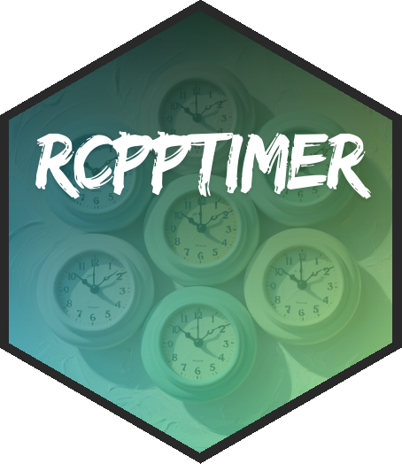

rcpptimer 
Overview
This R Package provides Rcpp bindings for cpptimer, a simple tic-toc timer class for benchmarking C++ code. It’s not just simple, it’s blazing fast! This sleek tic-toc timer class supports nested and overlapping timers and OpenMP parallelism. It boasts a nanosecond-level time resolution. Results (with summary statistics) are automatically passed back to R as a data frame.
Basic Usage with Rcpp::cppFunction
Here is a straightforward example of using the Rcpp::Timer with Rcpp::cppFunction:
Rcpp::cppFunction("
double demo_rnorm()
{
Rcpp::Timer timer;
timer.tic();
double x = rnorm(1, 1)[0];
timer.toc();
return(x);
}",
depends = "rcpptimer"
)
demo_rnorm()The timer object will automatically write its result to the R environment:
Check out the Documentation for:
- Setting up multiple, nested, and overlapping timers
- Using OpenMP parallelism
- Using rcpptimer with SourceCpp
- Adding rcpptimer to your package